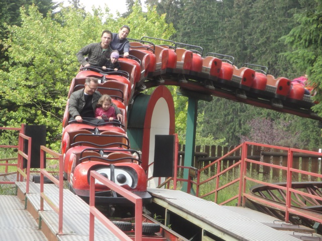
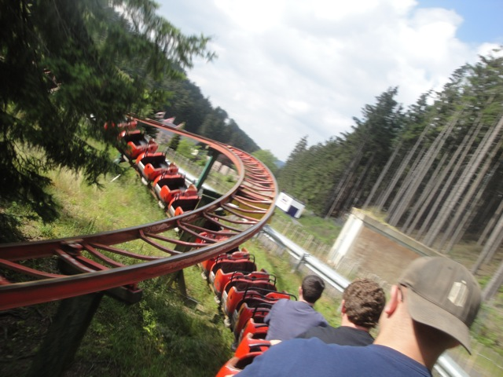
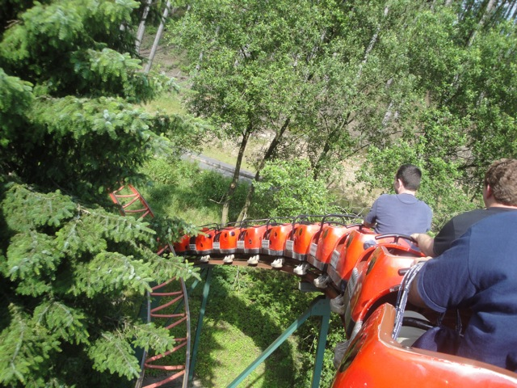
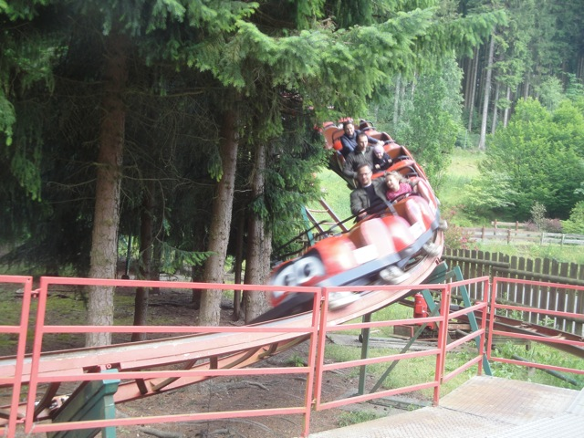

| |
Marienkaferbahn Review

We're here at Fort Fun where's we'll be revewing the kiddy coaster. Marienkaferbahn. You then go through a turn and start to climb up the lifthill. You then start to realize while climbing the lifthill, that this whole train is longer than the damn lifthill. By the time you reach the top, the front of the train is snaking around the course. Now normally, you'd think, "Wow. That's gotta have some whip!!!" Nope. It's so long that it's got no whip at all. The first drop is still fun for a kiddy coaster. You then head up some small hill, before dipping back down. It's nothing special, but remember. We're reviewing a kiddy coaster right now. After going through a ground hugging turn. We then rise up another small hill. Now this ride is hidden within the trees, so we're just snaking around right now. It's actually very soothing. We then dip down and go through a twisty turn, before dipping back down into another ground hugging turn. We then turn around and go through a couple of dips. And after a quick turn, we are back in the station. Now to be honest, there's really not much acceleration or deceleration on this ride since the trains are SO long. You can accelerate while going uphill and decelerate while going downhill, defying speed and gravity. It's like a giant powered coaster (Though I like how the long trains increase capacity). While it's just a kiddy coaster, Cobra is a very high quality kiddy coaster. I'd recommend giving it a try if you're into kiddy coasters or credit whoring.
4/10
Location: Fort Fun
Opened at Lowensafari und Freizeit-Park Tuddern in ???
Relocated to Fort Fun in 1986
Built by: Zeirer
Last Ridden: June 26, 2012
I have ridden this exact same ride at the following parks.
Six Flags Discovory Kingdom
Six Flags Great Adventure
Six Flags New England
Marienkaferbahn Photos




|